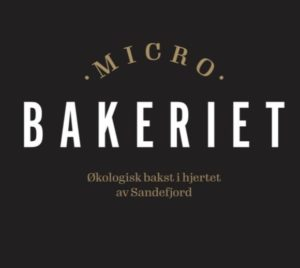
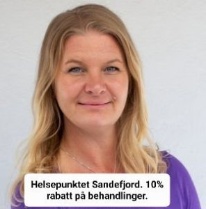
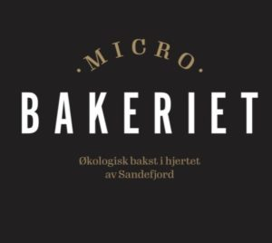
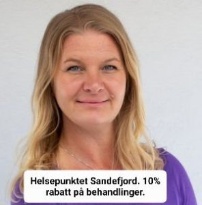

Økonomisk støtte
Det koster å hjelpe dyr, og vi er helt avhengig av privat, økonomisk støtte for å få driften til å gå rundt.
Den største inntektskilden vår er Grasrotandelen fra Norsk Tipping. Hvis du tipper eller spiller f.eks. Lotto, tar vi gjerne imot Grasrotandelen din!
- Innsamlinger på Facebook: Et godt tilskudd til driften vår. I forbindelse med fødselsdager er det noen som lager en Facebookinnsamling, og det er vi svært takknemlige for.
- Fjernadopsjon: Du kan lese mer om det her.
- Månedlig bidrag: Noen velger å støtte oss med et fast beløp hver måned. Stort eller lite, alt er like velkomment!
- Kalendere og julekort: Hvert år lager vi en kalender og julekort med bilder av katter som vi har tatt hånd om i året som gikk. Disse blir lagt ut for salg.
- Enkle donasjoner: Skulle du plutselig ha noen kroner til overs som du ønsker å donere til oss, tar vi gjerne imot! Vipps til 570826 eller overfør til konto 2480 25 14871.
- Bli medlem: Dyrevenn Vestfold er en medlemsorganisasjon, og for den beskjedne sum av kr 300,- pr. år kan du støtte driften vår. Du kan lese mer om medlemskap her:


 


